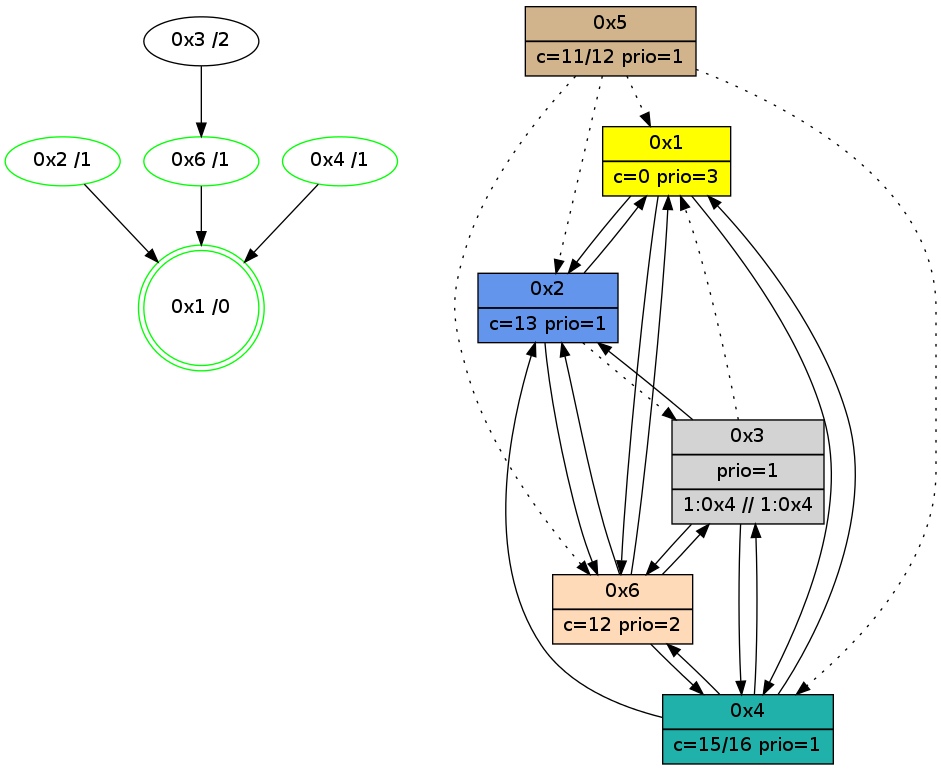

>> << IDX [start] -100 -25 -5 +0 +5 +25 +100 [1070.00281096]
 Previous packets
----------------------------------------------------------------------
1065.071771 beacon01(adaf) #0 coord=01,02,05,03,04,06 cycle=432.0ms assoc
-- color-indic=1 64 da fc
1065.081732 beacon02(adaf) #0 coord=01,02,05,03,04,06 cycle=432.0ms assoc 64 8b 03
1065.091732 beacon05(adaf) #0 coord=01,02,05,03,04,06 cycle=432.0ms assoc 64 2d 29
1065.101732 beacon03(adaf) #0 coord=01,02,05,03,04,06 cycle=432.0ms assoc 64 b1 0d
1065.111735 beacon04(adaf) #0 coord=01,02,05,03,04,06 cycle=432.0ms assoc 64 17 27
1065.121733 beacon06(adaf) #0 coord=01,02,05,03,04,06 cycle=432.0ms assoc 64 63 3b
1065.133439 [Hello(3): seq=870 sym=6,1 sysInfo=hasWarning stat=6:12,0,14,4/1:10,13,10,1]
1065.135245 [Hello(1): seq=772 sym=2,6 sysInfo=hasWarning,coloring-mode-on,ColoringModeRequestCalled stat=2:8,10,2,0/6:14,13,11,5]
1065.137172 [Hello(2): seq=1359 sym=3,6,1 sysInfo=hasWarning stat=3:5,1,3,1/6:15,1,8,4/1:2,14,1,0]
1065.139497 [Hello(6): seq=785 sym=2,1,3 sysInfo=hasWarning stat=2:11,1,2,0/1:9,13,12,1/3:3,11,11,10]
1065.143144 [STC(6)->1 #0.173 new-neigh,tree-change,inconsistent-stability,stable,to-color d=1]
1065.145750 [Color(6) seq=257 @0:0 color=12 prio=2 >3.@1 >>3.@1,1.@4 c=7,d,e;1,4,6,8,9,b]
----------------------------------------------------------------------
1065.563879 beacon01(adaf) #0 coord=01,02,05,03,04,06 cycle=432.0ms assoc
-- color-indic=1 64 1e 93
1065.573840 beacon02(adaf) #0 coord=01,02,05,03,04,06 cycle=432.0ms assoc 64 4f 6c
1065.583840 beacon05(adaf) #0 coord=01,02,05,03,04,06 cycle=432.0ms assoc 64 e9 46
1065.593840 beacon03(adaf) #0 coord=01,02,05,03,04,06 cycle=432.0ms assoc 64 75 62
1065.603840 beacon04(adaf) #0 coord=01,02,05,03,04,06 cycle=432.0ms assoc 64 d3 48
1065.613841 beacon06(adaf) #0 coord=01,02,05,03,04,06 cycle=432.0ms assoc 64 a7 54
1065.626382 [Hello(4): seq=872 sym=2,1,6,3 sysInfo=hasWarning stat=2:2,2,0,0/1:6,6,15,0/6:12,1,5,6/3:14,14,10,3]
1065.629516 [Color(4) seq=153 @0:0 prio=1 >3.@1 >>3.@1 c=7,c;1,4,6,8,9,b,d,e]
1065.631864 [Color(3) seq=187 @0:0 prio=1 >3.@1,1.@4 >>3.@1 c=7,c,d;1,4,6,8,9,b,e]
1065.635741 [Color(2) seq=258 @0:0 color=13 prio=1 >3.@1 >>3.@1 c=7,c,e;1,4,6,8,9,b]
----------------------------------------------------------------------
1066.055986 beacon01(adaf) #0 coord=01,02,05,03,04,06 cycle=432.0ms assoc
-- color-indic=1 64 52 23
1066.065947 beacon02(adaf) #0 coord=01,02,05,03,04,06 cycle=432.0ms assoc 64 03 dc
1066.075947 beacon05(adaf) #0 coord=01,02,05,03,04,06 cycle=432.0ms assoc 64 a5 f6
1066.085948 beacon03(adaf) #0 coord=01,02,05,03,04,06 cycle=432.0ms assoc 64 39 d2
1066.095949 beacon04(adaf) #0 coord=01,02,05,03,04,06 cycle=432.0ms assoc 64 9f f8
1066.105949 beacon06(adaf) #0 coord=01,02,05,03,04,06 cycle=432.0ms assoc 64 eb e4
1066.120323 [Hello(6): seq=786 sym=2,1,3 sysInfo=hasWarning stat=2:11,2,2,0/1:9,13,12,1/3:4,12,11,10]
1066.122064 [Hello(1): seq=773 sym=2,6 sysInfo=hasWarning,coloring-mode-on,ColoringModeRequestCalled stat=2:8,11,2,0/6:15,14,12,5]
1066.125090 [Color(6) seq=258 @0:0 color=12 prio=2 >3.@1 >>3.@1,1.@4 c=7,d,e;1,4,6,8,9,b]
1066.130016 [Color(1) seq=299 @0:0 color=0 prio=3 >1.@4 c=c,d;7,e]
----------------------------------------------------------------------
1066.548095 beacon01(adaf) #0 coord=01,02,05,03,04,06 cycle=432.0ms assoc
-- color-indic=1 64 96 4c
1066.558056 beacon02(adaf) #0 coord=01,02,05,03,04,06 cycle=432.0ms assoc 64 c7 b3
1066.568057 beacon05(adaf) #0 coord=01,02,05,03,04,06 cycle=432.0ms assoc 64 61 99
1066.578057 beacon03(adaf) #0 coord=01,02,05,03,04,06 cycle=432.0ms assoc 64 fd bd
1066.588058 beacon04(adaf) #0 coord=01,02,05,03,04,06 cycle=432.0ms assoc 64 5b 97
1066.598057 beacon06(adaf) #0 coord=01,02,05,03,04,06 cycle=432.0ms assoc 64 2f 8b
1066.610532 [Color(3) seq=188 @0:0 prio=1 >1.@4 >>1.@4 c=0,7,c,d;1,4,6,8,9,b,e]
1066.612300 [Hello(4): seq=873 sym=2,1,6,3 sysInfo=hasWarning stat=2:2,3,0,0/1:7,7,15,0/6:13,2,5,6/3:15,15,10,3]
1066.614337 [Color(2) seq=259 @0:0 color=13 prio=1 c=0,7,c,e;1,4,6,8,9,b]
1066.617180 [Color(4) seq=154 @0:0 color=15/16 prio=1 c=0,7,c;1,4,6,8,9,b,d,e]
----------------------------------------------------------------------
1067.040205 beacon01(adaf) #0 coord=01,02,05,03,04,06 cycle=432.0ms assoc
-- color-indic=1 64 db 4b
1067.050166 beacon02(adaf) #0 coord=01,02,05,03,04,06 cycle=432.0ms assoc 64 8a b4
1067.060166 beacon05(adaf) #0 coord=01,02,05,03,04,06 cycle=432.0ms assoc 64 2c 9e
1067.070166 beacon03(adaf) #0 coord=01,02,05,03,04,06 cycle=432.0ms assoc 64 b0 ba
1067.080167 beacon04(adaf) #0 coord=01,02,05,03,04,06 cycle=432.0ms assoc 64 16 90
1067.090167 beacon06(adaf) #0 coord=01,02,05,03,04,06 cycle=432.0ms assoc 64 62 8c
1067.104481 [Hello(1): seq=774 sym=2,4,6 sysInfo=hasWarning,coloring-mode-on,ColoringModeRequestCalled stat=2:9,12,2,0/4:0,1,0,0/6:15,14,12,5]
1067.106925 [Hello(6): seq=787 sym=4,2,1,3 sysInfo=hasWarning stat=4:0,1,0,0/2:11,3,2,0/1:9,14,12,1/3:5,12,11,10]
1067.110688 [Color(6) seq=259 @0:0 color=12 prio=2 >>1.@4 c=0,7,d,e,f;1,4,6,8,9,b]
1067.120247 [STC(1) #0.174 new-neigh,tree-change,inconsistent-stability,stable,to-color d=0]
1067.122531 [Color(1) seq=300 @0:0 color=0 prio=3 c=c,d,f;7,e]
----------------------------------------------------------------------
1067.532312 beacon01(adaf) #0 coord=01,02,05,03,04,06 cycle=432.0ms assoc
-- color-indic=1 64 1f 24
1067.542272 beacon02(adaf) #0 coord=01,02,05,03,04,06 cycle=432.0ms assoc 64 4e db
1067.552272 beacon05(adaf) #0 coord=01,02,05,03,04,06 cycle=432.0ms assoc 64 e8 f1
1067.562274 beacon03(adaf) #0 coord=01,02,05,03,04,06 cycle=432.0ms assoc 64 74 d5
1067.572274 beacon04(adaf) #0 coord=01,02,05,03,04,06 cycle=432.0ms assoc 64 d2 ff
1067.582274 beacon06(adaf) #0 coord=01,02,05,03,04,06 cycle=432.0ms assoc 64 a6 e3
1067.593886 [STC(6)->1 #0.174 new-neigh,tree-change,inconsistent-stability,stable,to-color d=1]
1067.598588 [Color(2) seq=260 @0:0 color=13 prio=1 c=0,7,c,e,f;1,4,6,8,9,b]
1067.600861 [STC(4)->1 #0.174 new-neigh,tree-change,inconsistent-stability,stable,to-color d=1]
1067.603474 [Color(4) seq=155 @0:0 color=15/16 prio=1 c=0,7,c;1,4,6,8,9,b,d,e]
----------------------------------------------------------------------
1068.024420 beacon01(adaf) #0 coord=01,02,05,03,04,06 cycle=432.0ms assoc
-- color-indic=1 64 53 94
1068.034380 beacon02(adaf) #0 coord=01,02,05,03,04,06 cycle=432.0ms assoc 64 02 6b
1068.044381 beacon05(adaf) #0 coord=01,02,05,03,04,06 cycle=432.0ms assoc 64 a4 41
1068.054381 beacon03(adaf) #0 coord=01,02,05,03,04,06 cycle=432.0ms assoc 64 38 65
1068.064381 beacon04(adaf) #0 coord=01,02,05,03,04,06 cycle=432.0ms assoc 64 9e 4f
1068.074381 beacon06(adaf) #0 coord=01,02,05,03,04,06 cycle=432.0ms assoc 64 ea 53
1068.086112 [Hello(2): seq=1362 sym=6,1 asym=3 sysInfo=hasWarning stat=6:2,4,10,4/1:4,0,2,0/3:5,1,3,1]
1068.088721 [Hello(6): seq=788 sym=4,2,1,3 sysInfo=hasWarning stat=4:0,2,1,0/2:11,4,2,0/1:9,15,13,1/3:5,13,11,10]
1068.091728 [Hello(3): seq=873 sym=6,2,4 asym=1 sysInfo=hasWarning stat=6:15,3,0,4/2:0,3,0,0/4:0,2,1,0/1:13,15,11,1]
1068.093612 [Color(6) seq=260 @0:0 color=12 prio=2 c=0,7,d,e,f;1,4,6,8,9,b]
1068.096158 [STC(3)->6-.->1 #0.174 to-color d=2]
1068.099513 [Hello(1): seq=775 sym=2,4,6 sysInfo=hasWarning,coloring-mode-on,ColoringModeRequestCalled stat=2:9,13,3,0/4:0,2,1,0/6:15,14,13,5]
1068.101561 [Color(1) seq=301 @0:0 color=0 prio=3 c=c,d,f;7,e]
----------------------------------------------------------------------
1068.516527 beacon01(adaf) #0 coord=01,02,05,03,04,06 cycle=432.0ms assoc
-- color-indic=1 64 97 fb
1068.526487 beacon02(adaf) #0 coord=01,02,05,03,04,06 cycle=432.0ms assoc 64 c6 04
1068.536489 beacon05(adaf) #0 coord=01,02,05,03,04,06 cycle=432.0ms assoc 64 60 2e
1068.546489 beacon03(adaf) #0 coord=01,02,05,03,04,06 cycle=432.0ms assoc 64 fc 0a
1068.556489 beacon04(adaf) #0 coord=01,02,05,03,04,06 cycle=432.0ms assoc 64 5a 20
1068.566489 beacon06(adaf) #0 coord=01,02,05,03,04,06 cycle=432.0ms assoc 64 2e 3c
1068.579037 [Hello(4): seq=875 sym=2,1,6,3 sysInfo=hasWarning stat=2:3,3,0,0/1:9,9,0,0/6:15,4,6,6/3:1,15,11,3]
1068.582170 [Color(4) seq=156 @0:0 color=15/16 prio=1 c=0,7,c;1,4,6,8,9,b,d,e]
1068.584699 [Color(2) seq=261 @0:0 color=13 prio=1 c=0,7,c,e,f;1,4,6,8,9,b]
----------------------------------------------------------------------
1069.008635 beacon01(adaf) #0 coord=01,02,05,03,04,06 cycle=432.0ms assoc
-- color-indic=1 64 c9 9a
1069.018596 beacon02(adaf) #0 coord=01,02,05,03,04,06 cycle=432.0ms assoc 64 98 65
1069.028598 beacon05(adaf) #0 coord=01,02,05,03,04,06 cycle=432.0ms assoc 64 3e 4f
1069.038596 beacon03(adaf) #0 coord=01,02,05,03,04,06 cycle=432.0ms assoc 64 a2 6b
1069.048597 beacon04(adaf) #0 coord=01,02,05,03,04,06 cycle=432.0ms assoc 64 04 41
1069.058597 beacon06(adaf) #0 coord=01,02,05,03,04,06 cycle=432.0ms assoc 64 70 5d
1069.072445 [Hello(1): seq=776 sym=2,4,6 sysInfo=hasWarning,coloring-mode-on,ColoringModeRequestCalled stat=2:9,14,3,0/4:0,3,1,0/6:15,14,13,5]
1069.076399 [Color(1) seq=302 @0:0 color=0 prio=3 c=c,d,f;7,e]
1069.078456 [Hello(6): seq=789 sym=4,2,1,3 sysInfo=hasWarning stat=4:0,3,1,0/2:12,5,2,0/1:10,0,13,1/3:5,13,12,10]
1069.081602 [Color(6) seq=261 @0:0 color=12 prio=2 c=0,7,d,e,f;1,4,6,8,9,b]
----------------------------------------------------------------------
1069.500742 beacon01(adaf) #0 coord=01,02,05,03,04,06 cycle=432.0ms assoc
-- color-indic=1 64 0d f5
1069.510702 beacon02(adaf) #0 coord=01,02,05,03,04,06 cycle=432.0ms assoc 64 5c 0a
1069.520703 beacon05(adaf) #0 coord=01,02,05,03,04,06 cycle=432.0ms assoc 64 fa 20
1069.530703 beacon03(adaf) #0 coord=01,02,05,03,04,06 cycle=432.0ms assoc 64 66 04
1069.540703 beacon04(adaf) #0 coord=01,02,05,03,04,06 cycle=432.0ms assoc 64 c0 2e
1069.550705 beacon06(adaf) #0 coord=01,02,05,03,04,06 cycle=432.0ms assoc 64 b4 32
1069.561770 [STC(1) #0.175 new-neigh,tree-change,inconsistent-stability,stable,to-color d=0]
1069.563864 [Hello(4): seq=876 sym=2,1,6,3 sysInfo=hasWarning stat=2:3,4,0,0/1:10,10,0,0/6:0,5,6,6/3:2,15,11,3]
1069.567004 [Color(4) seq=157 @0:0 color=15/16 prio=1 c=0,7,c;1,4,6,8,9,b,d,e]
----------------------------------------------------------------------
1069.992851 beacon01(adaf) #0 coord=01,02,05,03,04,06 cycle=432.0ms assoc
-- color-indic=1 64 41 45